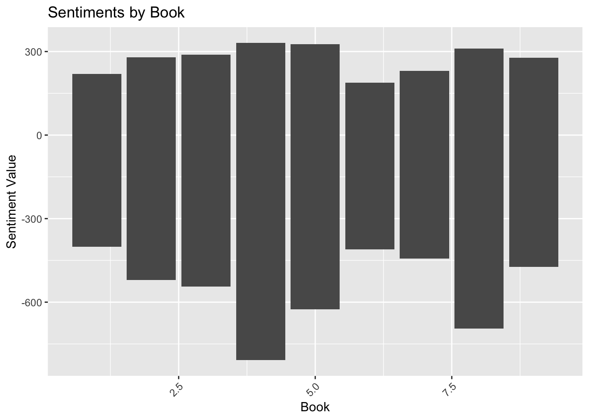

── Attaching core tidyverse packages ──────────────────────── tidyverse 2.0.0 ──
✔ dplyr 1.1.4 ✔ readr 2.1.5
✔ forcats 1.0.0 ✔ stringr 1.5.1
✔ ggplot2 3.4.4 ✔ tibble 3.2.1
✔ lubridate 1.9.3 ✔ tidyr 1.3.0
✔ purrr 1.0.2
── Conflicts ────────────────────────────────────────── tidyverse_conflicts() ──
✖ dplyr::filter() masks stats::filter()
✖ dplyr::lag() masks stats::lag()
ℹ Use the conflicted package (<http://conflicted.r-lib.org/>) to force all conflicts to become errors
library(scales)
Attaching package: 'scales'
The following object is masked from 'package:purrr':
discard
The following object is masked from 'package:readr':
col_factor
The Public Domain works available off Gutenberg. If we can look at the sentiments of Pride and Prejudice? Could we look at the sentiments of all her books and compare them to each other?
works <-gutenberg_works(languages="en",only_text=TRUE,rights=c("Public domain in the USA.", "None"),distinct=TRUE,all_languages=FALSE,only_languages=TRUE)austen_works <- works |>filter(str_detect(author, "Austen, Jane"))print(austen_works)
# A tibble: 11 × 8
gutenberg_id title author gutenberg_author_id language gutenberg_bookshelf
<int> <chr> <chr> <int> <chr> <chr>
1 105 "Persua… Auste… 68 en ""
2 121 "Northa… Auste… 68 en "Gothic Fiction"
3 141 "Mansfi… Auste… 68 en ""
4 158 "Emma" Auste… 68 en ""
5 946 "Lady S… Auste… 68 en ""
6 1212 "Love a… Auste… 68 en ""
7 1342 "Pride … Auste… 68 en "Best Books Ever L…
8 21839 "Sense … Auste… 68 en ""
9 31100 "The Co… Auste… 68 en ""
10 37431 "Pride … Auste… 68 en ""
11 42078 "The Le… Auste… 68 en ""
# ℹ 2 more variables: rights <chr>, has_text <lgl>
Obtain a book and turn the words into a tibble. Need to remove frequently used words.
Pride_Prejudice_works <- works |>filter(str_detect(title, "Pride and Prejudice")) #All avaible Pride and Prejudicesummary(austen_works)
gutenberg_id title author gutenberg_author_id
Min. : 105.0 Length:11 Length:11 Min. :68
1st Qu.: 149.5 Class :character Class :character 1st Qu.:68
Median : 1212.0 Mode :character Mode :character Median :68
Mean :12406.6 Mean :68
3rd Qu.:26469.5 3rd Qu.:68
Max. :42078.0 Max. :68
language gutenberg_bookshelf rights has_text
Length:11 Length:11 Length:11 Mode:logical
Class :character Class :character Class :character TRUE:11
Mode :character Mode :character Mode :character
str(austen_works)
tibble [11 × 8] (S3: tbl_df/tbl/data.frame)
$ gutenberg_id : int [1:11] 105 121 141 158 946 1212 1342 21839 31100 37431 ...
$ title : chr [1:11] "Persuasion" "Northanger Abbey" "Mansfield Park" "Emma" ...
$ author : chr [1:11] "Austen, Jane" "Austen, Jane" "Austen, Jane" "Austen, Jane" ...
$ gutenberg_author_id: int [1:11] 68 68 68 68 68 68 68 68 68 68 ...
$ language : chr [1:11] "en" "en" "en" "en" ...
$ gutenberg_bookshelf: chr [1:11] "" "Gothic Fiction" "" "" ...
$ rights : chr [1:11] "Public domain in the USA." "Public domain in the USA." "Public domain in the USA." "Public domain in the USA." ...
$ has_text : logi [1:11] TRUE TRUE TRUE TRUE TRUE TRUE ...
- attr(*, "date_updated")= Date[1:1], format: "2022-12-19"
pride_prejudice <- Pride_Prejudice_works$gutenberg_id[2] #contains the metadatapride_prejudice_book<-gutenberg_download(37431) #contains the book content
Determining mirror for Project Gutenberg from https://www.gutenberg.org/robot/harvest
Using mirror http://aleph.gutenberg.org
pride_prejudice_words <- pride_prejudice_book |>unnest_tokens(word,text) |>count(word) |>arrange(desc(n)) |>filter(!word %in% stop_words$word) |>mutate(book=1) #contains the words within the book, last pipeline places a unique identifier for the wordssummary(pride_prejudice_words)
word n book
Length:3030 Min. : 1.00 Min. :1
Class :character 1st Qu.: 1.00 1st Qu.:1
Mode :character Median : 1.00 Median :1
Mean : 3.36 Mean :1
3rd Qu.: 2.00 3rd Qu.:1
Max. :396.00 Max. :1
Next, we can obtain all of Austen’s aviable books. I included a book about her letters as well.
persuasion_words <-gutenberg_download(105) |>unnest_tokens(word,text) |>count(word) |>arrange(desc(n)) |>filter(!word %in% stop_words$word) |>mutate(book=2)#contains the words within Persuasionnorthanger_words <-gutenberg_download(121) |>unnest_tokens(word,text) |>count(word) |>arrange(desc(n)) |>filter(!word %in% stop_words$word) |>mutate(book=3)#contains the words within Northanger Abbeymansfield_words <-gutenberg_download(141) |>unnest_tokens(word,text) |>count(word) |>arrange(desc(n)) |>filter(!word %in% stop_words$word) |>mutate(book=4)#contains the words within Mansfield Parkemma_words <-gutenberg_download(158) |>unnest_tokens(word,text) |>count(word) |>arrange(desc(n)) |>filter(!word %in% stop_words$word) |>mutate(book=5)#contains the words within Emmaladysusan_words <-gutenberg_download(946) |>unnest_tokens(word,text) |>count(word) |>arrange(desc(n)) |>filter(!word %in% stop_words$word) |>mutate(book=6)#contains the words within Lady Susanlove_words <-gutenberg_download(1212) |>unnest_tokens(word,text) |>count(word) |>arrange(desc(n)) |>filter(!word %in% stop_words$word) |>mutate(book=7)#contains the words within Love and Friendshipsense_words <-gutenberg_download(21839) |>unnest_tokens(word,text) |>count(word) |>arrange(desc(n)) |>filter(!word %in% stop_words$word) |>mutate(book=8)#contains the words within Sense and Sensibilityletters_words <-gutenberg_download(42078) |>unnest_tokens(word,text) |>count(word) |>arrange(desc(n)) |>filter(!word %in% stop_words$word)|>mutate(book=9) #contains the words within The Letters of Jane Austen
Using tidytext functions words can be divided into positive and negative sentiments (bing), provided with a score from -5 to 5 (afinn), loughran and nrc provide additional types of sentiments outside of positive and negative such as constraining, litigious, anger, anticipation etc. All the tables are then appended into the one table, defined by a book number (1-9). The table is then matched to sentiments and a score.
word n book value
Length:3386 Min. : 1.000 Min. :1.000 Min. :-4.0000
Class :character 1st Qu.: 1.000 1st Qu.:3.000 1st Qu.:-2.0000
Mode :character Median : 3.000 Median :5.000 Median :-2.0000
Mean : 7.313 Mean :5.044 Mean :-0.7292
3rd Qu.: 7.000 3rd Qu.:7.000 3rd Qu.: 2.0000
Max. :125.000 Max. :9.000 Max. : 4.0000
sentiment.x sentiment.y
Length:3386 Length:3386
Class :character Class :character
Mode :character Mode :character
ggplot(austens_sentiments, aes(x = book, y = value)) +geom_bar(stat ="identity") +theme(axis.text.x =element_text(angle =45, hjust =1)) +# Rotate x labels for better readabilitylabs(x ="Book", y ="Sentiment Value", title ="Sentiments by Book")

“Mansfield” and “Sense and Sensibility” have a much wider range of sentiments when compared to the rest of Austen’s books.